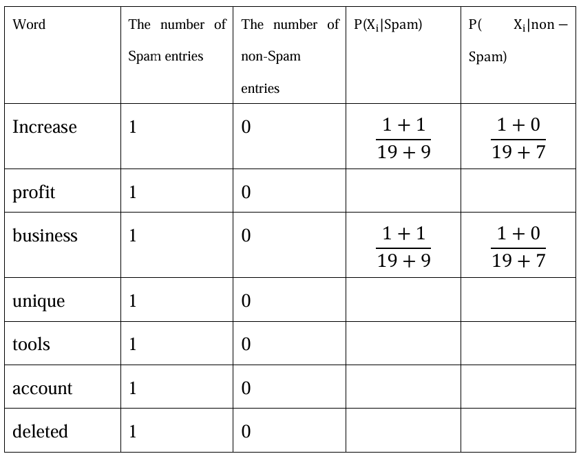
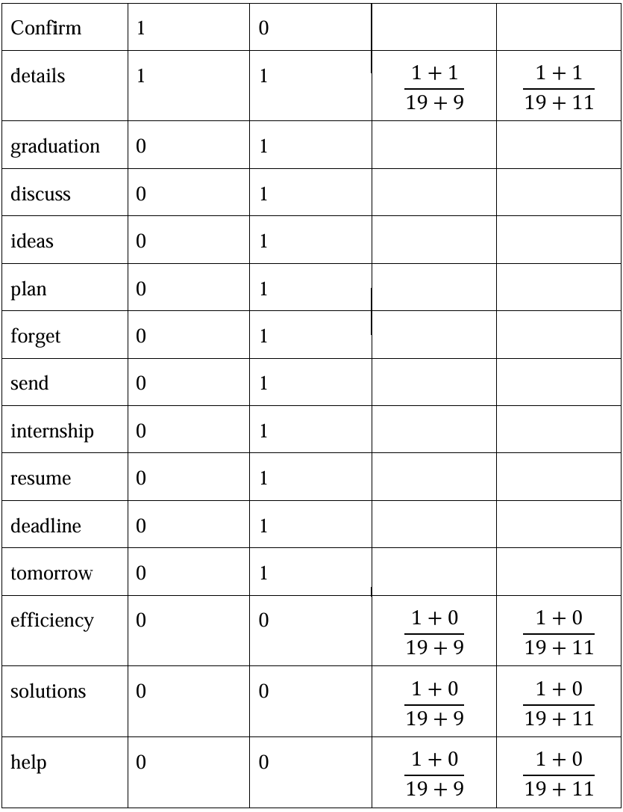
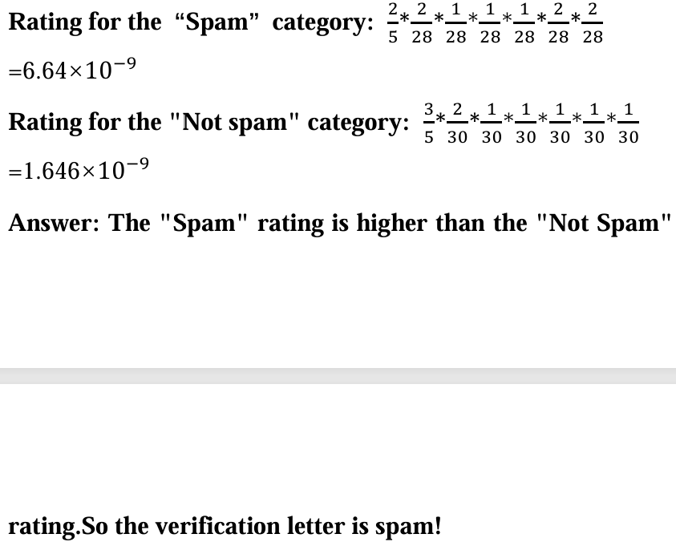
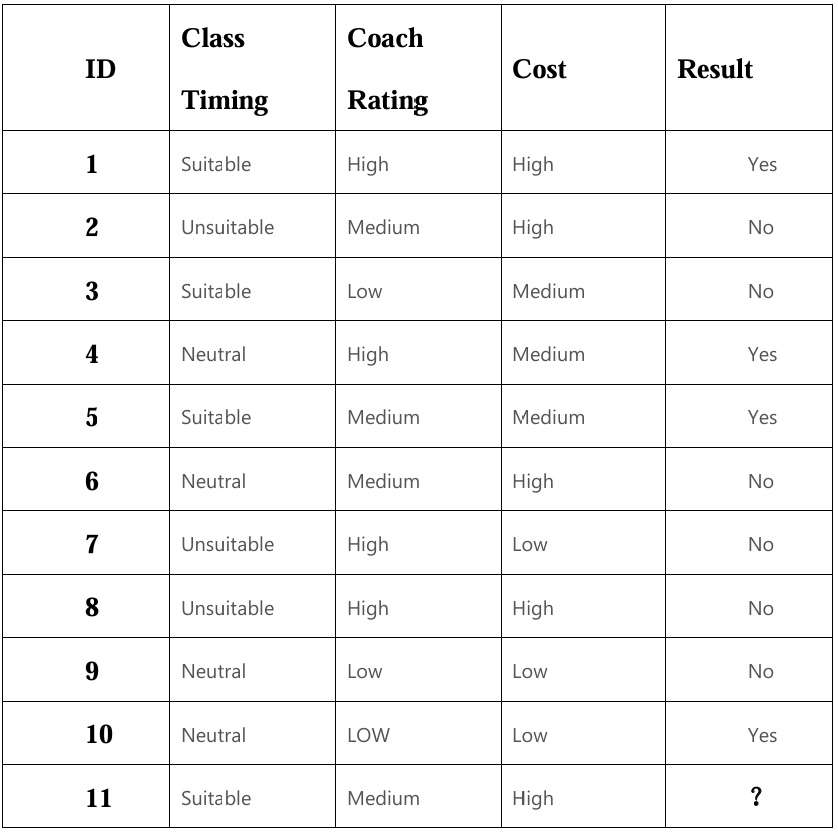
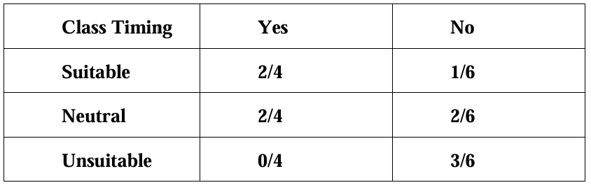

Practical Work Assignment 4
Problem Overview:
Given a set of spam and non-spam email examples, the task is to classify a test message using the Naive Bayes classification method.
Task Requirements:
Classify two spam messages and three non-spam messages. Use the Naive Bayes method to analyze the test message and determine its category.
Methods Used:
- Naive Bayes Method: Probability classification based on Bayes' theorem
- Conditional Probability Calculation: Analyze the probability of feature words
- Bayes' Theorem Application: Calculate posterior probability



Problem Overview:
Given a dataset containing 10 objects and 3 attributes, use the Naive Bayes method to classify a new object.
Task Requirements:
1. Create a dataset and label categories
2. Classify the 11th new object
Methods Used:
- Feature Probability Analysis: Calculate conditional probabilities for each attribute
- Prior Probability Calculation: Analyze class distribution
- Bayesian Inference: Combine probabilities for classification


P(Y) = 4/10 | P(N) = 6/10
Time Suitability Probability:
PY(Suitable) = 2/4
PY(Neutral) = 2/4
PY(Unsuitable) = 0/4
PN(Suitable) = 1/6
PN(Neutral) = 2/6
PN(Unsuitable) = 3/6
Coach Rating Probability:
PY(High) = 2/4
PY(Medium) = 1/4
PY(Low) = 1/4
PN(High) = 2/6
PN(Medium) = 2/6
PN(Low) = 2/6